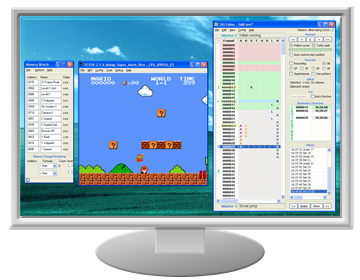
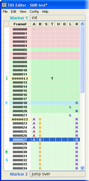
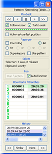

2. Program Interface
Program Interface
This chapter describes the program interface and ways of interacting with it.
The description uses many specific terms, so make sure you know the Glossary before starting the read. Also, it's advisable to run Taseditor right now, to be able to check everything you read in practice.
To enter Taseditor do the following:
- launch FCEUX emulator
- load any game ROM (File -> Open ROM)
- open Taseditor window (Tools -> TAS Editor)
When you engage Taseditor, the game is reset, and the emulator pauses. It shall stay paused as you TAS, to prevent the game from urging you on and distracting from analysis of information.

While TASing in Taseditor, a considerable part of the desktop is covered by the very Taseditor window. Emulator window is used for picture output, and you'd better scale it up to 2x size, so you won't miss a tiny detail even at a cursory glance. During your work you'll have to move eyes between emulator window and Taseditor window (mostly contents of the Piano Roll). So put those windows close to each other. The remaining space of the desktop can be populated with RAM Watch window, Lua console, etc.
You can adjust the size of TAS Editor window by dragging its edges with the mouse. The size and position are automatically saved and restored at next launch.
The window caption displays the program name ("TAS Editor") and the name of current project. If there are any unsaved changes, an asterisk is added to the end of the text. Besides, when the Input Recording mode is on, the word "Recording" appears in the window caption.
The main menu of the program is similar to one found in text editors like Notepad.
The File item is responsible for all file operations – creating a new TAS project, opening an existing file, saving, data importing and exporting. There's also a "Recent" sub-menu that stores direct paths to recently used projects.
The Edit item contains functions that let you edit TAS movie like a simple text file or a table file. Most of those functions can be accessed through standard key combinations, such as Ctrl + C, Ctrl + V and others. They will be reviewed later.
The View item allows to adjust the program appearance. Besides, here you can open the "Find Note" window, used to search text in Marker Notes. All of that will be described later. Until you study the Chapter 5 of this Guide, it's recommended to keep default preferences.
The Config item stores the rest settings, e.g. project auto-saving timer, the number of undo levels and other features that will be described during the learning flow. Don't change those settings for now.
Finally, the Help item contains the link to local copy of this Guide and the "About" window. Here you can also switch on/off hints (tooltips).
To the right of the main menu there is the Pattern item, displaying the name of current pattern. Patterns are just templates for speeding up the Input creation. They will be described in Chapter 6.
|
 |
|
 |
Created with the Personal Edition of HelpNDoc: Create help files for the Qt Help Framework